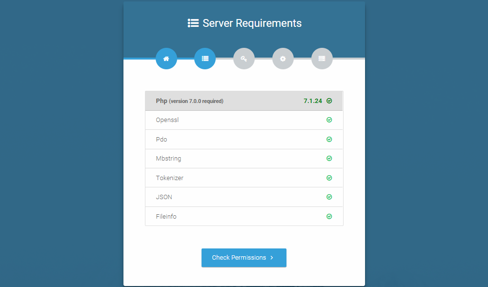
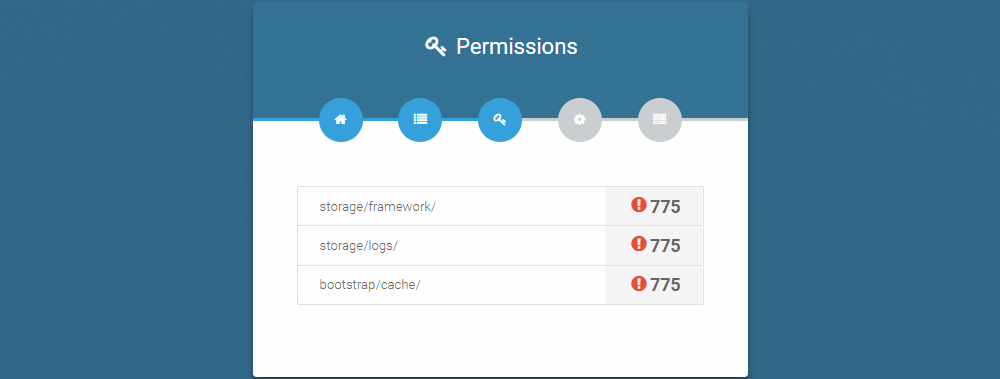
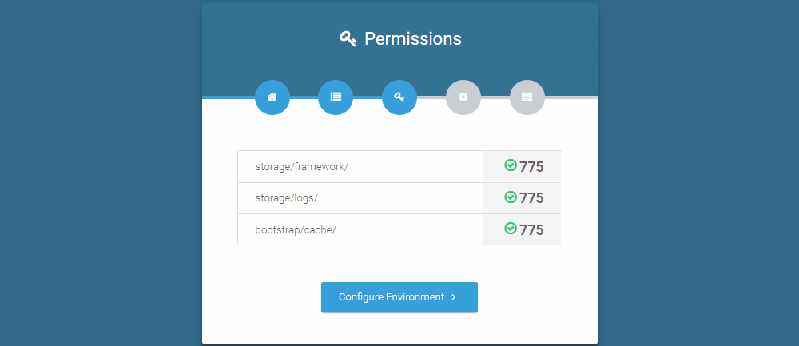
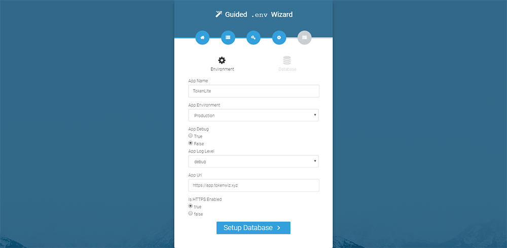
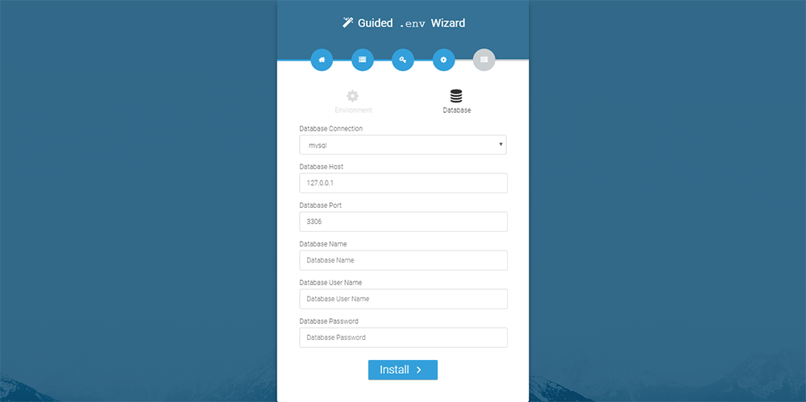
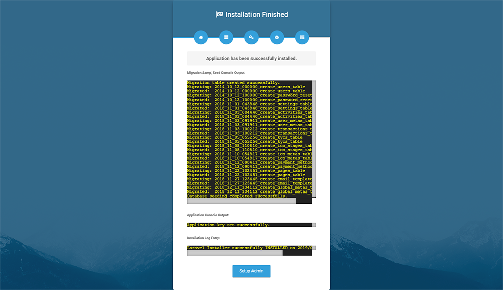
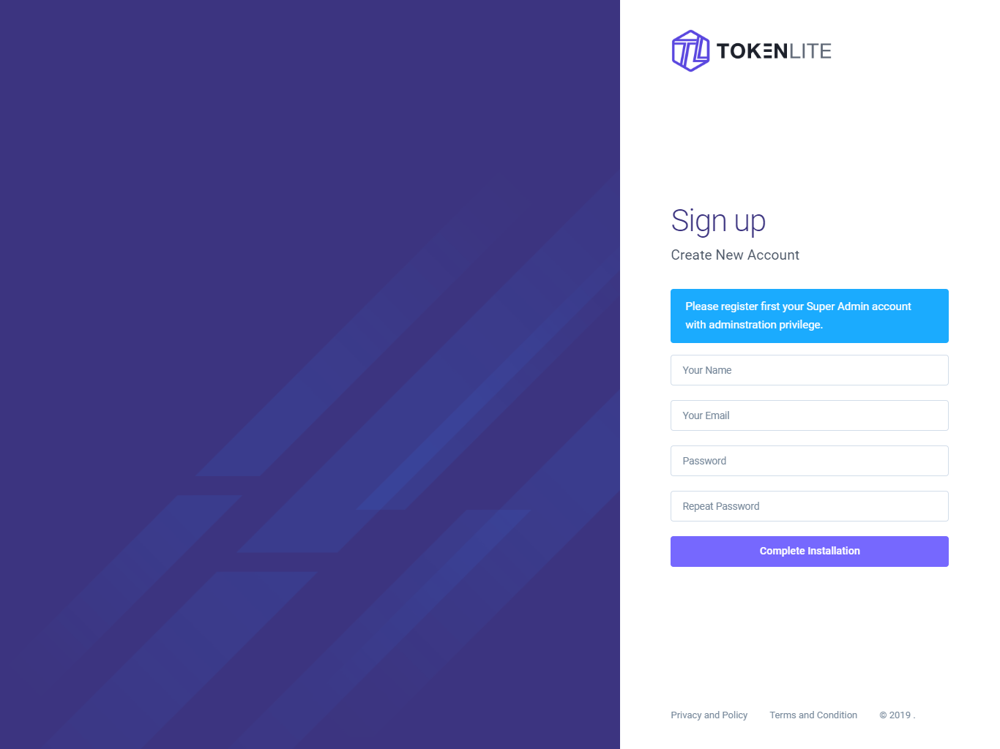

Installation
Unzip the Application
At first, after download the application, unzip the all files to your root folder, then move all files of public folder to your website public_html or www directory.
Requirement of Installation
// FOLDER PLACEMENT //
|---root
|---|---tokenlite_app
|---|---public (or public_html)
|---|---|---index.php
Please Note:
Remember the 'tokenlite_app' and 'public' folder should be consider as siblings.
tokenlite_app/storage/framework/ # 775
tokenlite_app/storage/logs/ # 775
tokenlite_app/storage/app/kyc-files/ # 775
tokenlite_app/storage/app/public/ # 775
tokenlite_app/bootstrap/cache/ # 775
You must set these folders
framework,logs,kyc-files,cachepermission to775as above. Sometimes base on server permission775may not work, then you have to set777
Before start the installation process please fulfill the server requirements as bellow.
- PHP >= 8.1
- OpenSSL PHP Extension
- PDO PHP Extension
- Mbstring PHP Extension
- Tokenizer PHP Extension
- XML PHP Extension
- Ctype PHP Extension
- JSON PHP Extension
- BCMath PHP Extension
- FileInfo PHP Extension
Wizard Installation Process
If you want to install the app using Web Installation then please full-fill the requirement of installation mentioned above. After that go to your website url.
https://your-domain.com/
If you face any problem in Wizard base installation,
Please check out our Manual Installation process.
Step One: Start Installation
It's automatically redirect to you to the install page, then just click Check Requirements.
Step Two: Check Requirements
if you see something is wrong then please fix this, then just reload the page. 
Step Three: Check the directory permission
If here you see something like this, then just fix the directory permission then reload this page.  If your page look like this, then click Configure Environment 
Step Four: Setup Application
- Set your application name.
- Set Environment or ignore with default
- Set Debug or ignore with default
- Set Log level or ignore with default
- Set URL (Your Application URL)
- Set HTTPS true/false

Step Four: Setup Database
In Database Setup page, set your database credentials.
- Set your database connection type, host, port, db-name, db-username, db-user-password

If everything is fine then click to Install Button. Application should be start to install.
Last & Final Step
After complete the application install process then you will see the page like bellow. 
If you see the application is successfully installed, then click the Exit button, and you will finish the installation process.
After installation complete, our application will redirect you to the registration page. Where you have to create your main administrative account.
Manual Installation Process
Step One: Configure .ENV File
Please go to tokenlite_app folder and edit the .env file. On this file please use bellow code and update accordingly to your information and save the file.
Please you must change these value -
APP_NAME, APP_URL, DB_HOST, DB_DATABASE, DB_USERNAME, DB_PASSWORD
APP_NAME='YOUR_APP_NAME_HERE'
APP_VERSION='1.6.0'
APP_ENV=production
APP_KEY=base64:bMzV/BygkgeonjHpn5c7NkwcAi8ckl+tBIEfNfOqgmw=
APP_DEBUG=false
APP_LOG_LEVEL=debug
APP_URL=http://yourdomainname.com
FORCE_HTTPS=false
DB_CONNECTION=mysql
DB_HOST=127.0.0.1
DB_PORT=3306
DB_DATABASE=your_db_name
DB_USERNAME=your_db_user_name
DB_PASSWORD=your_db_password
BROADCAST_DRIVER=log
CACHE_DRIVER=file
SESSION_DRIVER=file
QUEUE_DRIVER=sync
REDIS_HOST=127.0.0.1
REDIS_PASSWORD=null
REDIS_PORT=6379
MAIL_DRIVER=smtp
MAIL_HOST=smtp.mailtrap.io
MAIL_PORT=2525
MAIL_USERNAME=null
MAIL_PASSWORD=null
MAIL_ENCRYPTION=null
PUSHER_APP_ID=
PUSHER_APP_KEY=
PUSHER_APP_SECRET=
Step Two: Installed File placement
Please copy the installed file (found under manual-install-files folder) and placed into tokenlite_app/storage folder.
Step Three: Import Dummy SQL File
Please import the sql file dummy_app.sql into your database.
File found under manual-install-files folder.
Final Step
Once above step are complete please go to your website url.
https://your-domain.com/ & register first your Super Admin account. Then login to your account and configure the Website settings, Email settings, Payment settings and ICO Stages etc.
Note: First registered user will be always super-admin privilege.
Administrator account setup
If everything is working correctly then site will redirect to registration page.
Here you have to Register as Super Admin. 
Troubleshoot
After installation complete, if you see something is wrong or you want to re-install the application again, then follow bellow instruction.
you may just remove this file,storage/installed. and drop all database table or provide new db. then go to your website URL, you will be redirect to the installation page.